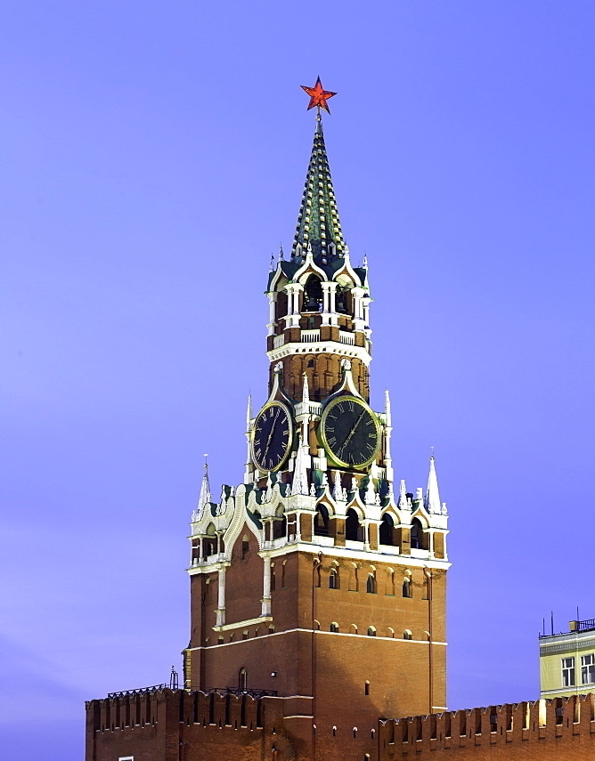
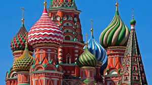
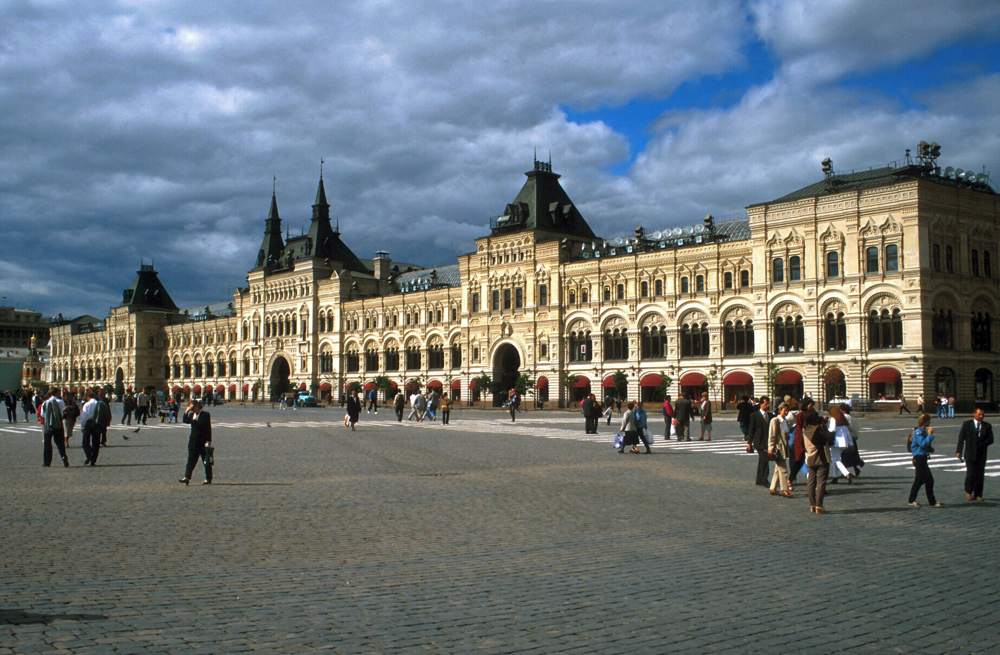

Time here
- The Kremlin
As aforementioned the original creation of the Kremlin dates back over 800 years. This magnificent architectural beast is the heart of Moscow.
- ST. Basil's Cathedral
Created in 1500’s, during Ivan the Terrible’s empire, this building was created to resemble a fire. It also has very diverse punchy colours.
- Lenin's Mausoleum
Opened to the public in 1924, the small building houses the remains of the man who created the Soviet Union. Vladimir Lenin.
- Gum
Created in 1893, the Gum is a boutique mall hosting many luxurious brands. Such as Louis Vuitton©. The inside is extremely detailed and gorgeous, to top it all off it has a glass roof. An engineering achievement for the time, because of the heavy snowfalls in Russia.
- Moscow State Historical Museum
The Museum was established in 1872, and maintains a Neo-Russian architectural aesthetic. Prior to this, the location used to be home to the Principal Medicine Store.
- Red Square
The red square was created alongside the Kremlin and has been in construction since 1156. This red square was originally designed to be market place. Surrounding this market place are the five aforementioned landmarks. This makes the red square arguably the most touristy spot in Russia.




.jpeg)